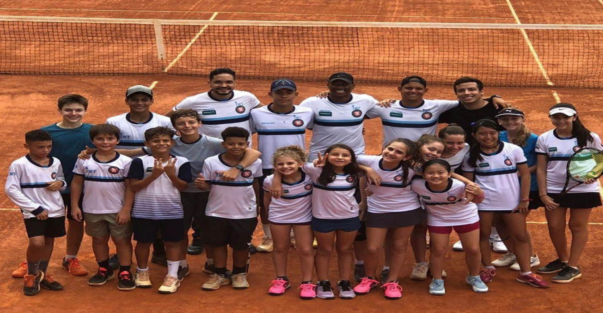
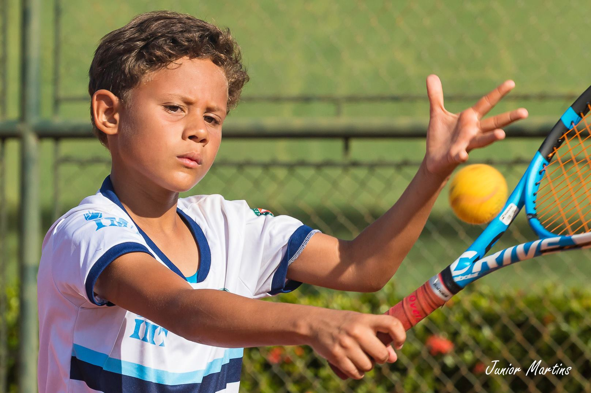
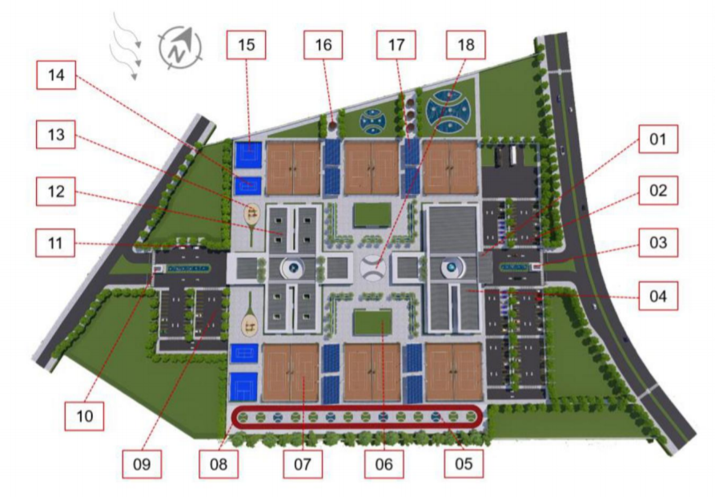

História
O Instituto Mato-grossense de Tênis (IMT) foi constituído para atuar sem fins lucrativos em maio de 2018 com o objetivo de desenvolver projetos sociais e executar ações que beneficiem a sociedade. Estabeleceu dois propósitos para dar sentido a própria existência, que são a formação esportiva e social de crianças, adolescentes e jovens e a massificação da modalidade tênis em Cuiabá-MT. E, em seus anos iniciais, já produziu dois projetos sociais e ambos aprovados pela Lei de Incentivo ao Esporte.
Objetivos
Missão: contribuir para o desenvolvimento socioeducativo de crianças, adolescentes e jovens por meio de práticas educacionais e esportivas.
Visão: ser reconhecida como uma instituição capaz de gerar transformação social.
Valores: Ética, Transparência e Transformação.
Presidente
Harrison Rainier Ribeiro é um contador de 48 anos, nascido em Campo Grande (MS), residente faz 47 anos em Cuiabá (MT), pai de Maria Eduarda, 22 anos, e Matheus, 10 anos, e avô de Helena, 2 anos. Ele é o fundador e o presidente do Instituto Mato-grossense de Tênis (IMT), entidade criada para se tornar uma facilitadora dos sonhos de crianças, adolescentes e jovens.

Tênis Social
O projeto Tênis Social oferece atividades de esporte educacional no contraturno escolar para 320 crianças, de seis a onze anos de idade. Visa oportunizar a prática do tênis para todas as camadas sociais com o intuito de gerar inclusão social e igualdade de gênero e melhorar a saúde, a qualidade de vida, o convívio social, a autoestima e, principalmente, o rendimento escolar. É um projeto aprovado pela Lei de Incentivo ao Esporte (nº 11.438/06) e apto à captação de recursos.

Top 10
O projeto Top 10 visa dar condições de treinamento de alto nível para 30 atletas, de sete a 16 anos. Um treinamento com estrutura física e técnica adequada e multidisciplinar de apoio, como, por exemplo, com treinador, assistente técnico, fisioterapeuta, nutricionista, psicólogo e preparador físico, e com materiais e equipamentos esportivos necessários às atividades. E ainda custear despesas de participação em torneios nacionais.

CT Tênis
Projeto arquitetônico de Centro de Treinamento de Tênis de Alto Rendimento com mais de sete mil metros quadrados de área construída, com doze quadras de tênis, quadra para crianças e paredão, pista de corrida, sistema de energia fotovoltaica, telhado verde e sistema de captação de água da chuva, entre outros, desenvolvido pela arquiteta, Rita de Cássia Lirio.
Endereço
Rua Rui Barbosa, n° 515, bairro Goiabeiras - Cuiabá-MT.
Contato
Celular:(65)99699-2009
E-mail:contatoimt@imt.com.br